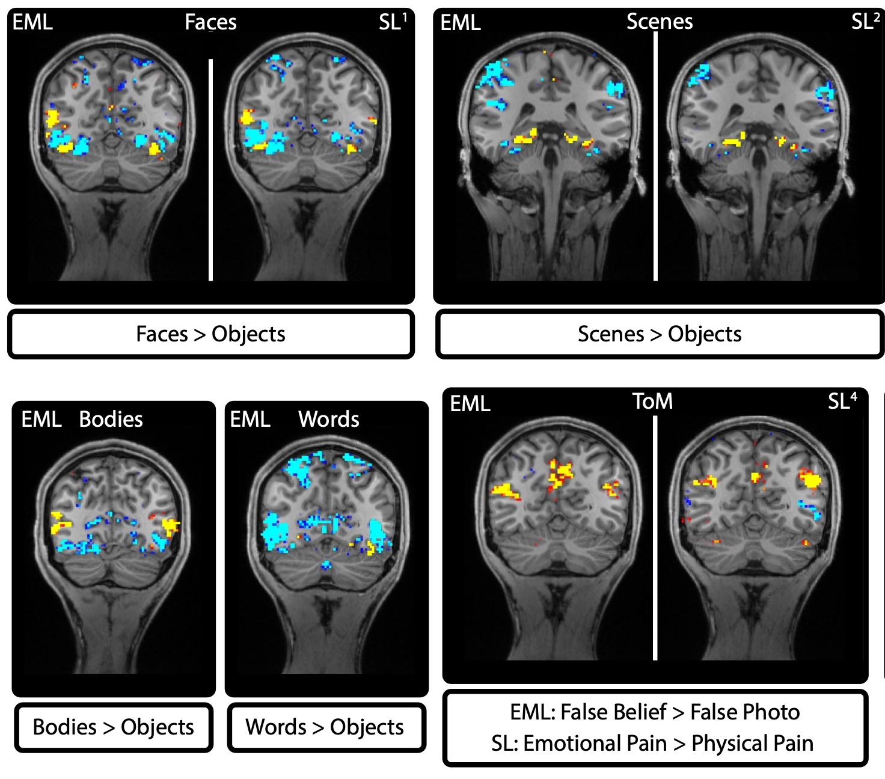

An Efficient Multimodal fMRI Localizer
Hutchinson, S., Marvi, A., Kamps, F., Chen, E., Fedorenko, E., Saxe, R., & Kanwisher, N. (2024). An Efficient Multimodal fMRI Localizer for High-Level Visual, Auditory, and Cognitive Regions in Humans. Journal of Vision, 24, 668. https://doi.org/10.1167/jov.24.10.668